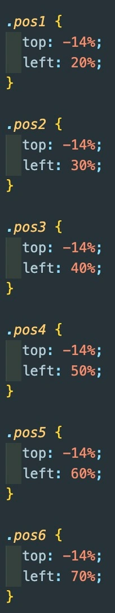
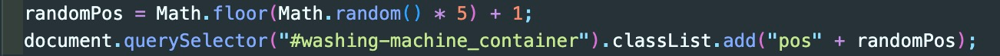

På dette tema blev jeg introduceret til JavaScript. Temaet endte ud med jeg producerede et spil der bestod af CSS animationer, der blev gjort interaktive med JavaScript.
Mit spil går ud på at få elementer til at falde fra toppen af skærmen, hvorefter at man skal klikke på de gode ting for at få point, og undgå de dårlige ting. Alle tingene har en position de falder ned fra, som er bestemt ved at give hver ting en forskellig klasse der har en position på x og y aksen ved at bruge top og left til at positionere elementerne.
Jeg ønskede at opnå at tingene ikke blev ved med at falde ned fra den samme position, og derfor valgte jeg at benytte math.random funktionen i JavaScript til at give hver ting en ny random position ved at lave en variable der hedder randomPos. Denne variable bruger math.random til at vælge et tilfældigt tal mellem 1 og 6, svarende til de 6 positioner jeg har defineret i CSS. Herefter kunne randomPos bruges i sammenhæng med addClass, der tilføjer en ny CSS klasse til alle de ting, der falder ned fra skærmen. På den måde kunne jeg opnå at tingene fik en ny position, hvergang de genstartede.
